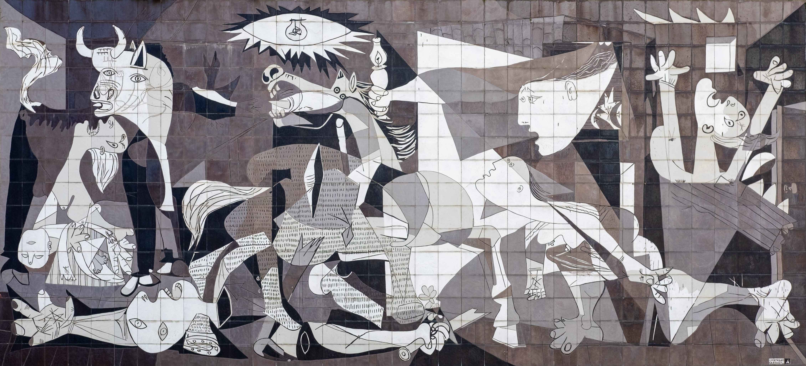
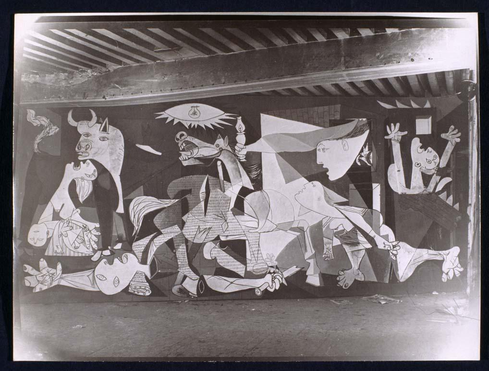
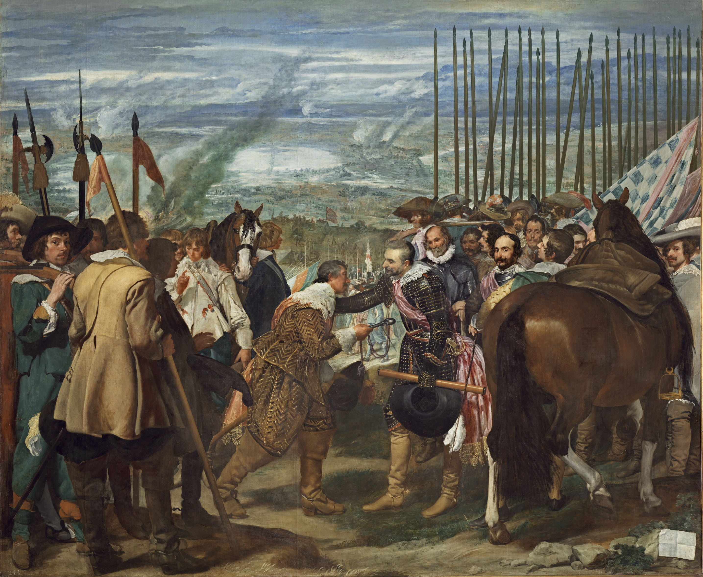
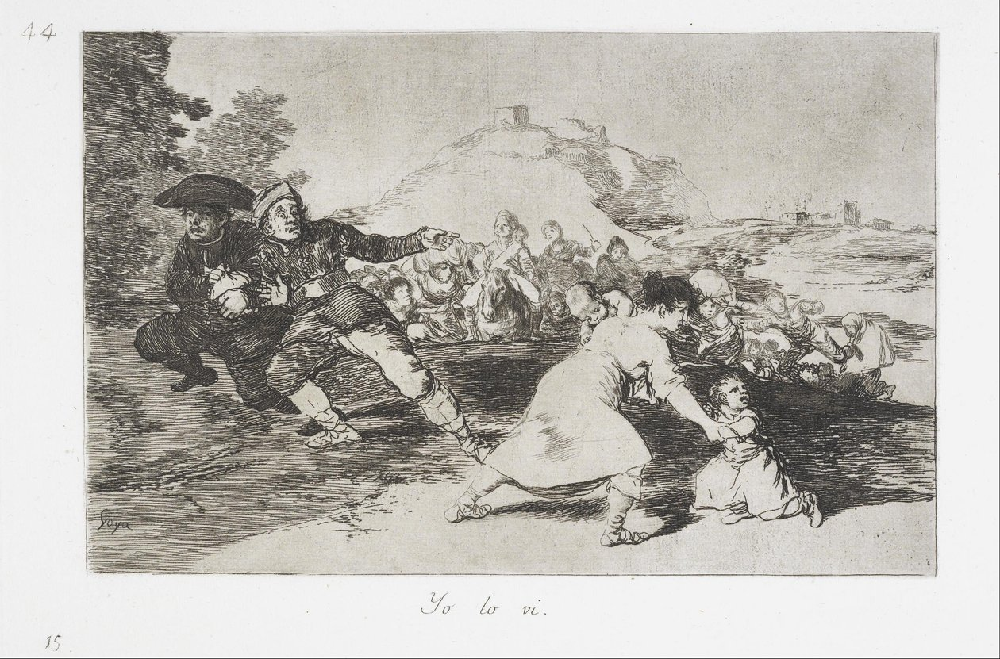
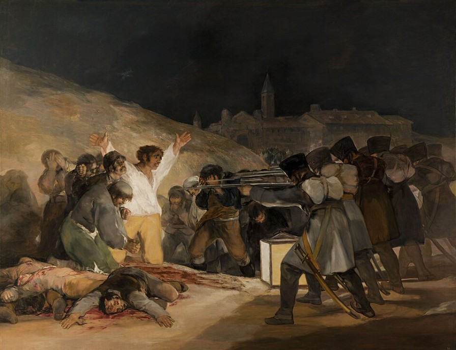
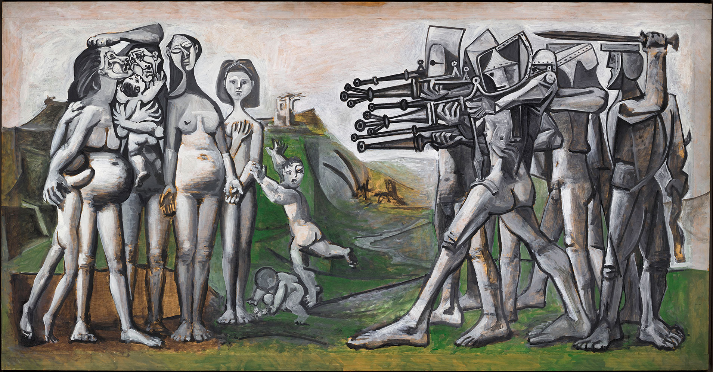
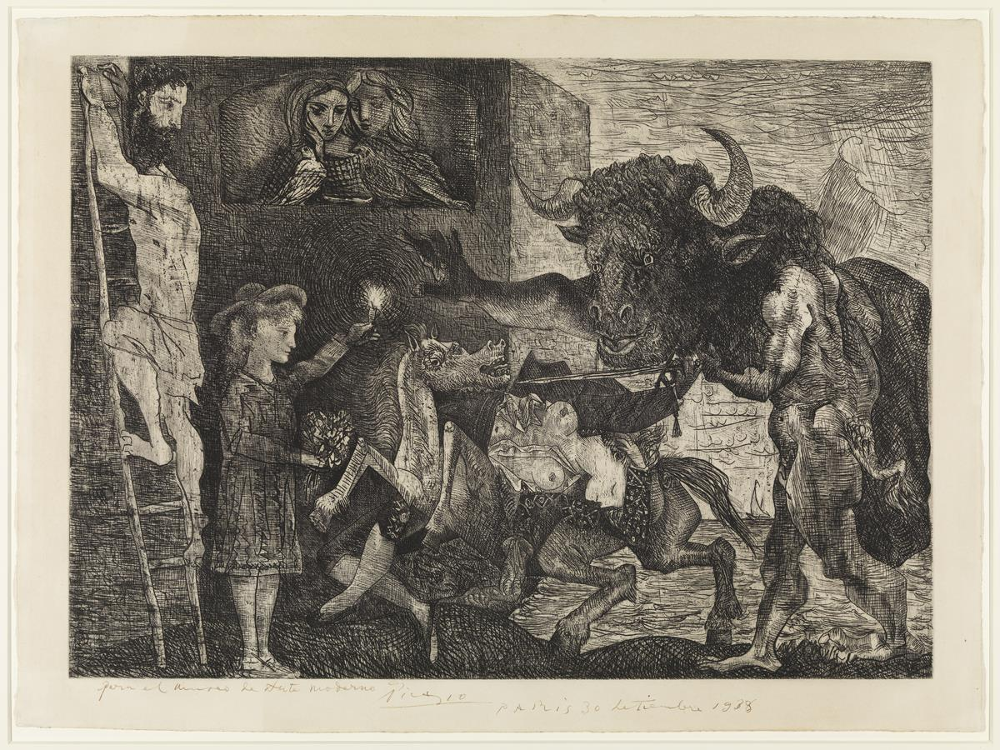
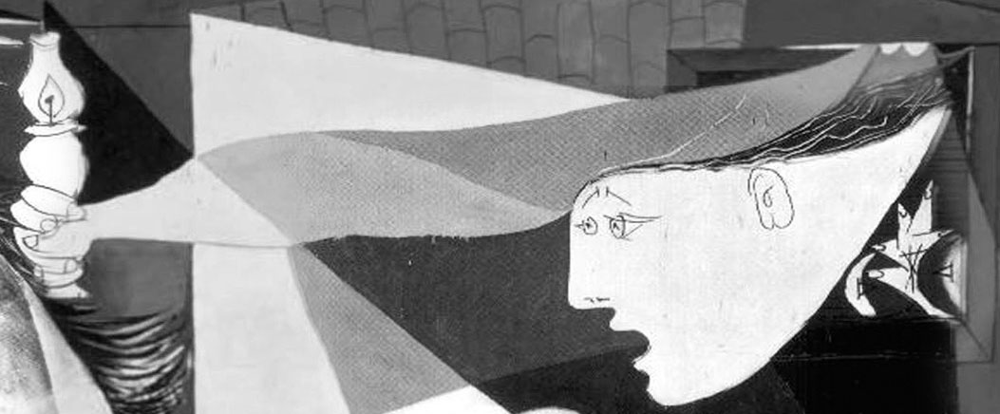

Capítulo 26
«Guernica», la visión de Pablo Picasso
La conversación sobre el «Guernica» de Picasso hay que empezarla con la palabra «de repente». Esa palabra asombrosa, «de repente»… Significa que nunca estamos preparados para algo; para nosotros todo lo que ocurre ocurre de repente. Y en efecto, de repente empezó la guerra. De repente. Así, de repente, el 26 de abril de 1937 la legión alemana «Cóndor» llevó a cabo un ataque aéreo sobre una pequeña y antiquísima ciudad vasca llamada Guernica. Los habitantes pacíficos dormían, la vida seguía su curso.1 Por supuesto, había una guerra civil, pero nadie esperaba que del cielo pudieran caer 22 toneladas de bombas, que en muy poco tiempo pudiera ser destruida una ciudad antigua, centro histórico y cultural del País Vasco, que el 70 por ciento de la ciudad fuera simplemente barrido de la faz de la tierra… ¡Qué tragedia fue aquella, qué gran tragedia!
En ese momento se encontraba en Guernica un corresponsal inglés muy conocido2, que de inmediato redactó una descripción detallada de lo ocurrido. Y ya unas horas después el mundo sabía lo que había pasado. Entonces en España había una guerra civil. Pero fuera como fuera, la historia del bombardeo de Guernica conmocionó a todos. Fue de repente, fue completamente inesperado.
El gobierno republicano español encargó un cuadro a aquel hombre que era el portavoz de España, una de las figuras centrales de la vida política y cultural de Europa de aquel tiempo: el pintor Pablo Picasso. Picasso no era solo pintor, escultor, ceramista; era además una personalidad. Una personalidad increíble por su energía, por su fuerza, por su relevancia, por su influencia. Y el gobierno republicano propuso a Picasso que en un mes3, es decir, para mayo de 1937, pintara un cuadro dedicado a ese terrible bombardeo de Guernica. Y Picasso pintó ese cuadro.

Su esposa de entonces, Dora Maar4, era fotógrafa, y fotografió todas las etapas de la creación del cuadro. Hoy el «Guernica» se encuentra en el Museo Reina Sofía de Madrid; antes estaba en el Prado, con lo que Picasso soñaba mucho5. Soñaba con que el cuadro estuviera en el Prado, y allí estuvo algún tiempo, y luego se trasladó ya al Museo Reina Sofía.

Es un cuadro enorme: 3,5 metros de alto y 7,8 metros de largo.6 En el museo se le ha dedicado toda una gran sala. Y en esa misma sala están colocadas las fotografías que Dora Maar hacía a medida que se creaba el cuadro. Y Picasso trabajaba como solo él sabía trabajar: sin apartarse del caballete catorce horas al día. Y en un mes el cuadro estuvo terminado. El «Guernica» se presentó en el pabellón español de la Exposición Universal de París.
Es muy interesante cómo un cuadro así, en la técnica de lienzo y pintura al óleo, pudo pintarlo Pablo Picasso en un mes. Da la impresión de que ya estaba todo entero dentro de él y solo le quedaba realizar el designio. Él mismo decía de sí: «Yo no busco, yo encuentro». Es su propia expresión. Y el «Guernica» fue como encontrado en el momento en que empezó a pintarlo. Son los enigmas de las personalidades extraordinarias, que no se parecen a nadie, que no tienen ninguna analogía en el mundo. Tal era la personalidad de Pablo Picasso. Y juzgar cómo pudo crear esa composición en un mes, no podemos. Sin embargo, ese cuadro se presentó en la Exposición Universal de París en mayo de 1937. En abril ocurrió el acontecimiento: el bombardeo de Guernica, y en apenas un mes Picasso pinta ese cuadro.
¿Y qué impresión produjo el «Guernica»? ¿A alguien emocionó ese cuadro, a alguien asombró, a alguien interesó? No. Es difícil de creer, pero no. Y Picasso decía: «Me llovieron palos tanto de mis enemigos como de mis amigos»7. Y el gran arquitecto, filósofo del urbanismo contemporáneo Le Corbusier escribió: «El cuadro de Picasso solo vio las espaldas de los visitantes». ¡Vaya crítica! Pero todo fue exactamente así: los contemporáneos no percibieron ese cuadro. En todo caso, las personas que estuvieron en la Exposición Universal de París en 1937. Después el cuadro se fue de gira por los Estados Unidos de América. De las vicisitudes de su destino puede hablarse largo. A menudo se menciona en las conversaciones una historia así. Cuando durante la Segunda Guerra Mundial, en 1940, las tropas alemanas entraron en París, al taller de Picasso vinieron de la Gestapo. Sobre la mesa de Picasso los alemanes vieron una postal: una reproducción del cuadro «Guernica». Preguntaron al pintor: «¿Esto lo hizo usted?» A lo que Picasso respondió: «No, eso lo hicieron ustedes»8.
El «Guernica» es un gran cuadro. Evidentemente, los espectadores de 1937 no estaban preparados para él, a pesar de que en ese tiempo Picasso era la persona número uno en la vida cultural de Europa. Picasso en general siempre fue famoso. Hay pintores a los que no conocieron en vida, a los que de algún modo no valoraron, no comprendieron, pero Pablo Picasso siempre fue famoso. Hay una historia muy interesante relacionada con Gertrude Stein, la conocida escritora norteamericana que compraba obras de Picasso. Ernest Hemingway describe su conversación sobre Picasso con Gertrude Stein.9 Dijo que le gustaría mucho comprar un cuadro de Picasso, a lo que Gertrude Stein respondió: «¡Eso ya es imposible!» Y eso que eran los años 1920. Hay que comprar a la gente «de su quinta», es decir, en general a los contemporáneos propios. Y Picasso ya entonces le resultaba inasequible a Hemingway: era un pintor famoso, caro y autorizado, legislador en cuestiones de arte.
Así que no puede decirse que su cuadro «Guernica» no fuera aceptado porque nadie lo conocía. A Picasso precisamente lo conocían bien, pero ese cuadro concreto no fue comprendido por el público. Por alguna razón, «cara a cara no se ve el rostro»10… No lo distinguieron como una respuesta instantánea a un acontecimiento con la palabra «de repente».
El Museo Reina Sofía de Madrid es, en general, un museo muy bueno. Allí se conservan interesantes muestras del cubismo español y francés, obras de un Salvador Dalí muy joven y también obras de Picasso. Pero antes de hablar del «Guernica», de cómo podemos verlo hoy (y hoy podemos ver tanto el cuadro mismo como todas las etapas del trabajo sobre él), recordemos que el «Guernica» no es simplemente un cuadro que describe un acontecimiento ocurrido en un momento determinado, el 26 de abril de 1937. Este cuadro es un hecho histórico, está pintado según un hecho histórico. Pero este cuadro, como comprendemos hoy, no es simplemente un cuadro sobre el bombardeo o un cuadro sobre la guerra: es un cuadro filosófico, es un cuadro de la filosofía de la guerra. Y para comprenderlo mejor hemos de remitirnos a los predecesores españoles de Picasso, a saber, a Velázquez y Goya, que también pintaron cuadros sobre la guerra, y esos cuadros también tenían su fecha, su literal veracidad histórica. Todos estos cuadros son ejemplo de cómo esa veracidad histórica fue interpretada por los grandes pintores y las grandes mentes de su tiempo.
Recordemos a dos españoles: Diego Velázquez, que pintó el lienzo «La rendición de Breda» (es un cuadro muy grande, que cuelga en Madrid, en el museo del Prado), y, por supuesto, a Francisco de Goya y su «Fusilamiento de los insurgentes en la noche del 3 de mayo de 1808» (ese cuadro también está en el museo del Prado, en Madrid). En la conversación sobre el «Guernica» es necesario remitirse a esos cuadros, porque entonces resulta comprensible la actitud de Picasso ante la guerra, resulta comprensible el lenguaje de su cuadro, que en 1937, aunque era familiar a los espectadores, parecía, al parecer, completamente inoportuno.
Así pues, Diego Velázquez, por encargo de su rey (precisamente por encargo del rey, y era pintor cortesano de Felipe IV), pintó un cuadro muy grande, vinculado a un acontecimiento que calentaba los corazones de los españoles. Ese cuadro fue pintado en 1634-1635, es decir, justo trescientos años antes que Picasso. Y vemos cómo cambia la conciencia de los hombres, cómo cambia la actitud ante la guerra a lo largo de esos trescientos años. Vemos que trescientos años atrás habitaba en la tierra otra humanidad. Y aunque cualquier guerra es siempre suciedad, sangre, horror, orfandad, violencia, y aunque cualquier guerra desata las pasiones más viles en los hombres, aun así la cosa no está en ese estado masivo, gregario de la guerra, sino en la interpretación que da cierta categoría superior de hombres, la élite intelectual y artística. Porque en la historia es ella la que permanece, porque ha quedado el «Guernica», ha quedado «La rendición de Breda», y no aquellas personas que le daban la espalda al «Guernica».
«La rendición de Breda» está dedicada a un acontecimiento alegre para España. Fue una gran victoria de los españoles, porque llevaban una guerra excepcionalmente desafortunada con los holandeses y todo el tiempo sufrían derrotas. Y de repente, una vez, ganaron la batalla junto a una pequeña ciudad holandesa llamada Breda (por cierto, hoy es una interesantísima ciudad universitaria y artística, antigua). ¡Vaya una victoria! No era una victoria especialmente destacada, pero la guerra va perdiéndose, y de repente ellos: ¡zas!, y tomaron la ciudad de Breda. Fue una alegría enorme. Y el rey Felipe IV encarga a Velázquez un cuadro así, y Velázquez lo pinta.
¡Qué cuadro tan asombroso! En otro tiempo se llamaba «Las lanzas». Y en efecto, cuando uno ve ese cuadro, comprende por qué se llamaba «Las lanzas». La fila de lanzas en este cuadro, en el lado derecho, es como una imagen de la victoria: así de ordenadas están las lanzas, las lanzas victoriosas de los españoles. Pero fíjense: este cuadro está pintado, en cuanto al espacio, a la manera de un montaje. En primer lugar, una parte del cuadro, la panorámica, la vemos desde un punto elevado: es el acontecimiento en primer plano, que ocurre como ante nosotros, pero sobre el fondo de España. Y por eso vemos lo que ocurre: la entrega de las llaves de Breda por el gobernador Justino de Nassau al duque Ambrosio de Spinola; ese acontecimiento está representado por el grupo central. En segundo lugar, vemos el lugar de la acción, el teatro de las operaciones militares: en el lado izquierdo están los holandeses. Están de pie en un pequeño grupo de hombres abatidos, así como pueden. Y en contraste con ellos, a la derecha están representados los españoles: organizados, con esas lanzas, en plena disposición de combate. Y, finalmente, en tercer lugar, vemos desde un punto elevado una suerte de montaje panorámico, un plano general, una panorámica sobre el fondo de toda España11. En total vemos en este cuadro como tres puntos: uno, el gobernador Justino de Nassau, que entrega al duque de Spinola, el vencedor, las llaves de Breda; el segundo, el teatro de la acción, los personajes a derecha e izquierda, holandeses y españoles; y, por último, el tercero, la amplia panorámica histórica de España, sobre cuyo fondo ocurre todo.

Por supuesto, la parte central de este cuadro, especialmente destacada por Velázquez, subrayada por él (e incluso el caballo está así, como una herradura que cierra y conforma el semicírculo de esa composición), son dos figuras. En ellas está toda la esencia de lo que ocurre, porque el gobernador Justino de Nassau ha inclinado un poco la espalda, no servilmente, no, sino con plena sumisión interior, y entrega esas llaves al duque de Spinola. Pero el duque de Spinola no se enorgullece, no es altivo; incluso con ternura, fraternalmente, palmea el hombro del gobernador: no pasa nada, cosas de la guerra.
Humanista, gran humanista Velázquez… ¡Cómo pinta a los holandeses derrotados! Pinta sus retratos. Que estén aquí un poco ajados, pero son muchachos jóvenes y hermosos, tienen toda la vida por delante. ¡Qué magníficamente están pintados! Tanto a los enemigos, los holandeses, como a los suyos, los españoles, Velázquez los pinta por igual: se relaciona con ellos como con personas, se relaciona con ellos como con personalidades. Sí, aquí unos son vencedores y otros vencidos, pero Velázquez «invocaba la clemencia para los caídos»12. Hay una entonación de alto humanismo en ese acto de entrega de las llaves de Breda. Hay un gran respeto con el que el pintor pinta a todos los hombres. Los representa con gran simpatía: tanto a los holandeses como a los españoles. Y, por supuesto, el pincel de Velázquez es divino. Uno se acerca al cuadro y mira cómo están pintadas esas ropas sobre los holandeses, sus jubones: esa pincelada amplia, esa irisación, ese centelleo del color que él tanto ama, del que tanto disfruta. Puede incluso decirse que en «La rendición de Breda» hay festividad, y no abatimiento. Sí, hay vencedores y vencidos, pero también hay festividad. Simplemente los héroes del cuadro están en una situación de victoria o de derrota, pero todos son personas, hermosos jóvenes. Y este cuadro, aunque es un cuadro de la hermosa victoria de los españoles, del duque de Spinola y del rey Felipe IV, lo principal en «La rendición de Breda» no es la representación de la victoria, sino la filosofía de la guerra. Sí, hay guerra, pero también hay el tema del gran humanismo, la clemencia para los caídos, la humanidad de los vencedores y los vencidos. Hay que seguir siendo personas, independientemente de en qué lado se esté en el momento de las acciones militares. Y en Velázquez no hay ningún encarnizamiento. Su pincel es magnífico: pinta un mundo íntegro, preservado, hermoso. Ese es el Velázquez del siglo XVII.
Pasan doscientos años. Llega el comienzo del siglo XIX; en España vive el pintor Francisco de Goya. No vamos a discutir si es más o menos grande que Velázquez: todas esas son conversaciones ridículas. Los dos son genios del pueblo español. En España, igual que en Rusia, el artista es siempre más que un artista. Encarna en sí algo más. Velázquez no era solo pintor, y lo mismo puede decirse de Goya. Por su pincel hablaba, por así decirlo, España, como hablaba por las palabras de Cervantes y Lope de Vega. Son pintores que hablan con las palabras de la historia, del tiempo y de la nación, y no del gobierno o del pueblo. Están presentes ante nosotros como el tiempo, como la época y como el país.
Napoleón Bonaparte da a su hijastro Eugenio de Beauharnais plenos poderes para la conquista de España.13 Eugenio de Beauharnais introduce tropas en el país, y los franceses, que se posicionan como continuadores de la Revolución Francesa y pronuncian altas palabras, en España se comportan como se comporta cualquier tropa en un territorio ocupado: incendios, saqueos, violencia. A esos acontecimientos Goya dedicó la serie de grabados «Los desastres de la guerra», que se convirtieron en documentos de esa terrible guerra entre el Imperio napoleónico y España. Cierto es que, si se miran esos grabados con más atención, resulta que no todo es unívoco.

Ahora se trata de aquel cuadro que, como «La rendición de Breda», se convirtió en filosofía de la guerra para el hombre del siglo XIX: no el humanista del siglo XVII, sino el hombre del siglo XIX. Ese trabajo lo pintó Goya también por un motivo completamente concreto, era un hecho histórico conocido. Cuando en España comenzó la guerra de guerrillas contra los ocupantes14, las tropas francesas tomaron como rehenes a civiles y declararon que si para determinada hora no cesaban tales o cuales acciones militares, fusilarían a los rehenes. Y Goya muestra ese fusilamiento de rehenes por los franceses.
El cuadro «Fusilamiento de los insurgentes en la noche del 3 de mayo de 1808» produce una impresión increíble. Es, en general, un gran cuadro (hoy está en el museo del Prado). Tiene una gran importancia artística. Si en el cuadro de Velázquez en el centro están representados dos hombres, el gobernador vencido y el vencedor, el duque de Spinola, aquí, en el centro del lienzo, hay un solo hombre. Es el hombre del que emana una luz amarilla brillante, la mancha cromática más activa. Está de rodillas, con los brazos abiertos. Y aunque está de rodillas, está por encima de todos, es más que todos. Es el hombre que expresa con su persona el grito de España, su protesta. Pero en el cuadro vemos además a aquellos rehenes que han sido fusilados. Uno de ellos está muy cerca de nosotros, en el lado izquierdo. Es un campesino. Miren cómo yace: ya ha muerto, pero yace en brazos de la tierra, como abrazando la tierra, apretándose a ella. Y cómo van los rehenes al fusilamiento: los que están detrás de ese campesino, en el centro de la composición… Van con el rostro cubierto por las manos. Pero ese campesino en la mancha de luz es la figura central. Si se pusiera en pie, resultaría un gigante, quedaría por encima del viejo terraplén sobre cuyo fondo se produce el fusilamiento de los rehenes. La guerra es oscura, la noche ha caído sobre España, y si Velázquez pinta los acontecimientos a plena luz del día, en el cuadro de Goya todo ocurre de noche, en la oscuridad. Es la hora de la traición, la hora más y más terrible del día, la «hora del demonio»: aún no ha cantado el gallo, aún no ha desaparecido la noche ni ha llegado la mañana. Pero ese hombre con los brazos abiertos ha soltado de sí el miedo. Todos tienen miedo, y él no tiene miedo. Tiene los ojos muy abiertos. Con ese gesto de las manos extendidas, como si estuviera en la cruz, ha dejado salir de sí el pájaro del miedo. Ya no teme nada. Y esa ausencia de miedo lo convierte en vencedor, en el único verdadero vencedor, en el centro semántico de ese cuadro, porque ya no hay en él miedo, se lo ha quitado de encima. De verdad que nunca hay que tener miedo. Y nada, salvo la propia conciencia, debe temer el hombre. ¡He ahí que él no tiene miedo!

El lado derecho del cuadro es muy interesante. Aquí Goya nos muestra el ejército francés, y como fusilan a los rehenes en esa «hora del demonio» tan crepuscular, han puesto un gran farol a sus pies y han acercado sus fusiles directamente al rostro. No se parecen en absoluto a personas: se parecen a una especie de gigantesco ciempiés que en lugar de rostro tiene bocas de fusil. No tienen rostro, son todos iguales: tienen el mismo chacó, la misma mochila, todos tienen la misma estatura. Todos ellos, en lugar de rostro, tienen bocas de fusil apuntadas… ¿a quién? A personas asustadas e indefensas. No tienen rostro, tienen solo bayonetas. Y hay que prestar atención además a qué interesante trabaja aquí la luz en Goya: todos ellos parecen casi incorpóreos. Ahí está el campesino muerto, que yace en la tierra, que abraza la tierra. Y qué decir de la figura central, genialmente pintada por Goya, de esa figura del vencedor sin miedo, que ha vencido su miedo. Y los franceses en el cuadro son de algún modo incorpóreos, como si no tuvieran carne, como si no fueran humanos. Precisamente eso subraya Goya: no son humanos.
Cuando Picasso pintó su cuadro «La masacre de Corea», utilizó ese procedimiento de Goya que vemos en el «Fusilamiento de los insurgentes en la noche del 3 de mayo de 1808». En el cuadro de Picasso vemos exactamente igual bocas de fusil en lugar de rostros, igualmente hay personas con fusiles de pie, al lado. Para Picasso, citar la clásica universal es una de sus ocupaciones más queridas, uno de sus procedimientos más queridos. Para él, citar la clásica universal es prácticamente su camino vital, porque no es simplemente una cita. Cuando los grandes pintores citan, no significa que simplemente repiten lo dicho por alguien antes que ellos. Significa que conversan con sus predecesores, mantienen un diálogo vivo. Y ese diálogo vivo en Picasso es tal que con él no se puede comparar a nadie. ¡Con quién no se comunica! Recordemos cómo se comunica con la Antigüedad, cómo habla con la Antigüedad, cómo habla con la época del Renacimiento, con Lucas Cranach el Viejo, con sus contemporáneos, con Édouard Manet. Es una comunicación asombrosa y muy amplia. Y, por supuesto, Picasso se comunica muchísimo con Velázquez: recordemos sus «Meninas», variaciones sobre el tema del cuadro de Velázquez. Y, en particular, en su cuadro «La masacre de Corea» Picasso cita a Francisco de Goya. Las citas en un gran pintor son magníficas, son testimonio de su vínculo con la cultura.

Pero volvamos a Goya. Para Goya la guerra no es en absoluto lo que la guerra es para Velázquez. Para Goya la guerra es violencia; para Goya la guerra es el exterminio por inhumanos, por un ejército enemigo, de civiles indefensos. No es un duelo: es el exterminio, ni siquiera de un ejército enemigo, sino de campesinos pacíficos, iguales a los que ellos dejaron a sus espaldas en su Francia. Esas personas con fusiles se han convertido simplemente en un objeto, en un instrumento de exterminio. Y Goya hierve de indignación. Nos llama a odiar la violencia. Nos llama, porque en él es muy fuerte el espíritu del panfleto; Goya tiene un temperamento muy abierto. En general Goya es una de las pocas personas en la historia clásica del arte, incluida la historia del siglo XIX, que se comunica con uno de manera tan abierta, que expresa de manera tan abierta el desafío en su arte. Por eso hace aguafuertes tan notables. Y he aquí que os propone inflamaros con esa indignación y no temer nada. ¡No temer nada! Y nos detenemos ahora en este cuadro de Goya precisamente porque él es un hombre del siglo XIX, que ya ha vivido ese momento de la ocupación. Hay que decir además que Goya se relaciona con Francia de un modo muy complejo, porque en su juventud admiraba la República Francesa, incluso aceptó a Napoleón. Más aún: murió en la emigración, precisamente en Francia, en Burdeos. Goya emigró a Francia porque no soportó la restauración de los Borbones españoles; tenía malas relaciones con el rey Fernando VII. Y Goya emigró a Burdeos. Así que es una historia bastante compleja, pero la actitud del hombre de comienzos del siglo XIX ante la guerra está expresada en Goya con extrema claridad y precisión. Para él la guerra es un horror, y en ella todo es horrible. Pero el mundo sigue siendo íntegro: Madrid sigue en pie, y su Zaragoza natal sigue en pie15, y la tierra sigue en pie, y el viejo cerro fortificado sigue alzándose. Solo los hombres se comportan de manera terrible. Y la tierra, el mundo, aunque se han sumido en el crepúsculo, conservan sin embargo su integridad.
Y ahora miremos el cuadro de Picasso. En Picasso vemos una filosofía de la guerra completamente distinta. Solo Picasso la expresó por primera vez en 1937, tras el bombardeo de Guernica. Sacó una conclusión fenomenal, y no debemos olvidarlo. Es un pintor; dijo lo que entonces no dijo nadie más, y a él le daban la espalda.
¿Y qué vemos en ese cuadro? El «Guernica» está pintado en una gama de blanco y negro, aunque de blanco hay más bien poco. Pero ¿por qué es en blanco y negro? ¿Por qué está privado de cualquier color? Porque el mundo se oscureció, se decoloró, se quedó sin luz solar. La luz desapareció del mundo. Desapareció la principal ventaja de la vida: el mundo se volvió sin vida, se volvió en blanco y negro, se volvió incoloro. Aquí puede recordarse al cineasta Andréi Tarkovski, que rodó «Andréi Rubliov» en blanco y negro y solo los iconos de Rubliov los rodó en color. ¿Por qué? Está claro que habla en el lenguaje de la historia. Ese celuloide narra tiempos lejanos, la antigüedad. Es fruto de su imaginación, algo que ya ha desaparecido. Y en color está representado solo lo que existe, lo que sigue existiendo hasta hoy. Y por eso Tarkovski hace los iconos en color. Porque así fueron pintados, y siguen existiendo ahora, mientras que Rubliov mismo y aquellos acontecimientos no existen. Tarkovski cuenta la historia de Andréi Rubliov, por eso es en blanco y negro; y los iconos no son historia, son reales, y por eso están en color. Y en Picasso esto es algo muy importante: la actitud ante el color. En Picasso es un cuadro en blanco y negro porque no solo está decolorado, sino que además está privado de luz.
¿Qué más vemos en el cuadro «Guernica»? Absolutamente todas las imágenes están fragmentadas, desfiguradas, llevadas al grado extremo de una expresividad o representatividad extática, cuando todo está más allá de los sentimientos o las relaciones normales. A la izquierda, una mujer que corre con un niño, que arrastra a ese niño: ese cuello estirado, el miedo y la desesperación más allá de la desesperación y el miedo. Y a la derecha, de una casa en llamas salta una figura. Y un soldado, con una espada rota en las manos. Presten atención a que esa textura negra y gris de todo el cuadro absorbe en sí una enorme cantidad de no sé qué texto de periódico, como si fuera un collage hecho con un periódico. Allí no hay ningún periódico, por supuesto. Eso significa el fin de todo: de la civilización del libro, de la civilización del periódico y de todos los sentimientos. Sobre todo el mundo reina de nuevo un horror ctónico del origen primero, y aquí surgen los personajes recurrentes de Picasso, que atraviesan toda su obra: el toro y el caballo. Para Picasso son antihéroes. Si se hojean libros con reproducciones de sus obras, puede verse en qué diversidad surgen en Picasso: toros, caballos, corridas. El tema del amor y la muerte, donde ellos son imágenes de la muerte surgidas del inframundo, imágenes ctónicas del no ser.

En la conversación sobre el «Guernica» es imposible simplemente dar una interpretación determinada a cada personaje o a cada elemento, como en el cuadro de Velázquez o en el cuadro de Goya. Si «La rendición de Breda» o el «Fusilamiento» son cosas vinculadas a hechos determinados, y pueden considerarse desde el punto de vista de la dramaturgia, como un relato, como un asunto representado por el pintor, el «Guernica» es una cosa mitologizada. En él están representados personajes mitologizados. En el centro, como si irrumpiera de algún lugar, aparece Temis con una lámpara en la mano16: una titánide furiosa, diosa de la justicia. Entre sus numerosas funciones está también la venganza, e irrumpe para iluminar lo que ocurre: ¡he aquí, mirad!

Velázquez, como decíamos, porta la filosofía del humanismo, del alto intelecto, llama a la clemencia para los caídos: sí, es una victoria, pero tanto vencedores como vencidos son personas. La filosofía de Goya es la repugnancia ante la guerra, el odio a la violencia en general, la compasión por las víctimas. Y Picasso en el «Guernica» afirma: señores, la guerra en el siglo XX es la destrucción de la materia como tal, y el humanismo y las disquisiciones sobre lo justo o lo injusto no tienen nada que ver aquí. He aquí qué conclusión saca Goya de un único hecho17, del bombardeo casi inocente de la ciudad de Guernica. Dice: la guerra en el siglo XX no es solo la desintegración de la civilización, no es solo la destrucción de libros y periódicos, no es solo la ofensa a los pobres, indefensos y huérfanos, no es solo la muerte de soldados: es la desintegración del mundo material en general. Es la desaparición de la materia. Es la marcha de la razón, es la marcha de cualquier luz del mundo. ¡Es asombroso! El pintor saca tal conclusión, y las personas están ante su cuadro, lo miran y empiezan a discurrir si es cubista o no es cubista, si es futurista o no es futurista, y por qué habrá pintado eso. No comprenden. Y los contemporáneos de Rembrandt no comprendían. A Picasso, por así decirlo, todos lo aceptaban, por sus obras pagaban caro. Pero he aquí que pintó un cuadro profético (y el «Guernica» es, sin duda, un máximo), y las personas no encuentran otro tema de reflexión que las preguntas: cómo pinta tales o cuales elementos y por qué de repente el cuadro es en blanco y negro. También eso puede discutirse, claro. Pero aquí lo importante es otra cosa: en este cuadro hay una filosofía de la guerra, hay en él una conclusión que el pintor-profeta saca sobre qué es la guerra hoy.
Para Picasso la guerra es una caída fuera de la vida, una caída fuera de todo. Final, desenlace, fin: ni siquiera el fin de la civilización o de la humanidad, sino simplemente el retorno del mundo al caos. Porque esos héroes mitológicos que él saca a escena son hijos del caos, son el rostro ctónico del caos. Llega el tiempo del caos. El logos que construyó la Antigüedad, el logos que construyó la civilización, ya no existirá, desaparecerá. El mundo volverá al estado de caos, se sumergirá en la intemporalidad.
Tales visiones, tales comprensiones no pueden quedar sin consecuencias. Y la cosa no está en cuántas copias se hicieron del «Guernica» (una copia del «Guernica» incluso cuelga en la Organización de las Naciones Unidas18). La cosa está en que cuando al mundo se le presentan tales cosas, la conciencia debe percibirlas de manera adecuada. Sí, por supuesto, amamos mucho nuestros gustos en materia de arte: esto nos gusta, esto no nos gusta. En nosotros prevalece sobre todo esa, por así decirlo, gastronomía estética: esto lo pinta bien, esto lo pinta mal… Entre paréntesis, para convencerse de que Picasso sabía pintar y dibujar todo, basta con mirar sus dibujos, sobre todo los dibujos vinculados a la Antigüedad. Por ellos puede verse qué dibujante clásico era, igual a Nicolas Poussin o a Simon Vouet, es decir, a la más alta clásica francesa. Pero él elige aquel lenguaje que necesita para mostrar que la guerra del siglo XX es la desintegración de la materia y el retorno de nuestro mundo al caos. Y nosotros hasta hoy, como aquellos espectadores de 1937, le damos la espalda a esa circunstancia.
En la serie «Centauros» de Josif Brodski19 hay unos versos que describen con mucha precisión ese estado:
Notas del editor
1. El bombardeo de Guernica se produjo a media tarde, hacia las 16:30 del lunes 26 de abril de 1937, día de mercado. Lo realizaron la Legión Cóndor alemana y la Aviación Legionaria italiana. Las cifras de bombas y de víctimas siguen siendo objeto de debate.
2. George L. Steer, corresponsal de «The Times», llegó a Guernica esa misma noche. Su crónica se publicó en Londres y Nueva York el 28 de abril.
3. El Gobierno de la República había encargado a Picasso un mural para el pabellón español de la Exposición Internacional de París en enero de 1937, antes del bombardeo. Picasso eligió el tema tras conocer la noticia y trabajó en el lienzo entre el 1 de mayo y comienzos de junio. El pabellón, obra de Josep Lluís Sert y Luis Lacasa, se inauguró el 12 de julio.
4. Dora Maar no fue esposa de Picasso, sino su compañera entre 1936 y 1943. En 1937 Picasso seguía casado con Olga Jojlova.
5. Picasso dispuso que el cuadro no volviera a España hasta que se restablecieran las libertades democráticas. Tras su larga estancia en el MoMA de Nueva York, llegó a Madrid en 1981 y se expuso en el Casón del Buen Retiro, dependiente del Prado. En 1992 pasó al Museo Reina Sofía.
6. Exactamente, 349,3 × 776,6 cm, óleo sobre lienzo.
7. No hemos podido localizar la fuente de esta frase. La cita de Le Corbusier procede de sus escritos sobre la Exposición de 1937.
8. La anécdota, que se cuenta de varias maneras (un oficial alemán, una postal del «Guernica»), es muy conocida, pero no está documentada.
9. En «París era una fiesta» (1964), Hemingway cuenta que Gertrude Stein le aconsejó comprar cuadros de pintores de su edad, «de su quinta», porque los de Picasso ya eran inasequibles.
10. Verso de Serguéi Esenin, de «Carta a una mujer» (1924): «Лицом к лицу / Лица не увидать».
11. El fondo de «La rendición de Breda» no es un paisaje de España, sino la vista de los alrededores de Breda, con la llanura inundada y el humo del asedio. La rendición tuvo lugar en junio de 1625. Velázquez pintó el cuadro en 1634–1635 para el Salón de Reinos del palacio del Buen Retiro.
12. Verso de Pushkin, del poema «Me he erigido un monumento…» («Я памятник себе воздвиг нерукотворный», 1836): «И милость к падшим призывал».
13. Error de la autora. Eugenio de Beauharnais era virrey de Italia y no intervino en España. Las tropas francesas en Madrid las mandaba el mariscal Joachim Murat, cuñado de Napoleón, y en junio de 1808 el emperador puso en el trono a su hermano José Bonaparte.
14. Los fusilamientos del 3 de mayo de 1808 no fueron una represalia contra la guerrilla, que aún no existía. Fueron la represión del levantamiento popular de Madrid del día anterior, el 2 de mayo. Goya pintó los dos cuadros («El 2 de mayo» y «El 3 de mayo») en 1814, tras la expulsión de los franceses.
15. Goya nació en Fuendetodos, un pueblo de la provincia de Zaragoza, en 1746. Se exilió a Francia en 1824 y murió en Burdeos en 1828.
16. La identificación de la mujer que asoma por la ventana con la lámpara con Temis es una interpretación de la autora. La crítica la ha leído también como figura de la verdad, de la República o de la conciencia que ilumina la matanza.
17. Así en el original ruso («делает Гойя»): es un lapsus de la autora por «Picasso».
18. Es un tapiz, tejido en 1955 por Jacqueline de la Baume Dürrbach por encargo de Nelson Rockefeller y con aprobación de Picasso. Estuvo depositado en la sede de la ONU en Nueva York de 1985 a 2021.
19. Josif Brodski, «Centauros» («Кентавры», 1988), ciclo de cuatro poemas.